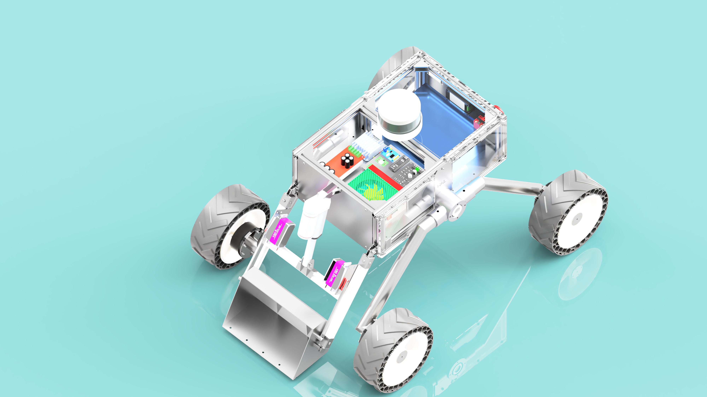
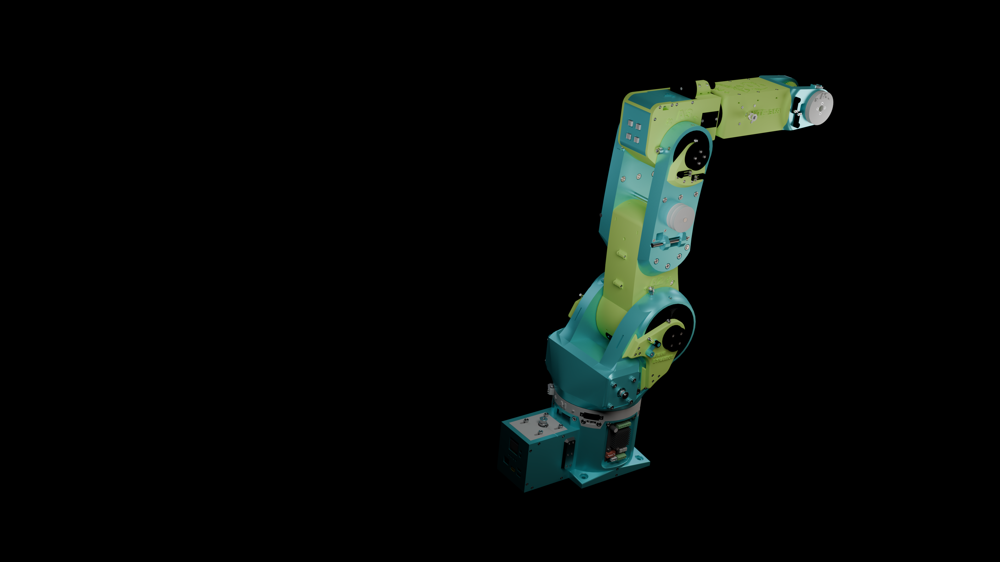

Robot Architecture
Design and development of serial, SCARA, parallel and Cartesian robotic systems.
Tools: NITE 369, robotic arm design
Eight core engineering domains with visual showcases. Scroll through each domain below.
Design and development of serial, SCARA, parallel and Cartesian robotic systems.
Forward and inverse kinematics implementation for multi-axis robotic manipulators.
Design and development of planetary gearboxes, cycloidal mechanisms and robotic joints.

Development of custom robotic grippers, tool attachments and manipulation mechanisms.

Integration of mechanical, electronic and embedded subsystems into complete robotic systems.
Stepper motor positioning setup - closed-loop positioning systems.

Encoder-based closed-loop control - feedback control systems for position and velocity.
MATLAB robot trajectory simulation - path planning and motion profiles for robotic systems.
Motion profile graphs - trapezoidal and S-curve velocity profiles for smooth robotic movement.

GRBL, LinuxCNC and G-code - motion control firmware for CNC systems and robotic controllers.
RP2040 PIO pulse generation - parallel I/O programming for real-time motion control on Raspberry Pi Pico.
Visual layout recommendation: Each domain card uses actual engineering photographs rather than generic placeholders. Your photographs demonstrate what you have actually worked on - NITE 369 robotic arm, MATLAB kinematics screenshots, gearbox photographs, robotic grippers, complete robotic systems, stepper motor setups, encoder-based controls, trajectory simulations, GRBL firmware, and RP2040 PIO programming. These real project images far outweigh any stock photographs in demonstrating your hands-on expertise.